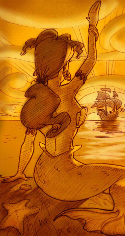

by GABRIEL SCHENK
As I stand in the lonely churchyard of Morwenstow Church, populated only by the falling autumn leaves and the bodies of the forgotten dead, I see, on the Norman doorway, the figures of dolphins, whales, and mermaids carved onto its archway. The faces of the merfolk are indistinct, blemished by centuries of Cornish wind and hail. Their features are all but obliterated: blotchy contours represent only the memory of a face. The Thumb of God has rubbed away the efforts of former men. There is still enough resemblance in the faces to recognize them as mermaids, though. There, in the deep recesses of the worn rock, you see the remnants of hair, teeth, and eyes. If the sun is positioned low over the churchyard wall, and the clouds are absent, then it is possible for the light to shine onto these features, bringing them back to life. I have only seen this once, when I visited Cornwall in 1968, but for that moment it seemed that the mermaids were looking directly at me, glowing in the beams of an orange sun.
It is well known that mermaids were to be included in the credit sequence of LucasArts’ videogame The Curse of Monkey Island, but were deleted before the game was finished, for mysterious reasons. We are told, from official sources, that the mermaids simply “did not fit into the world of Monkey Island.” Such a statement depends on there being a single world of Monkey Island, however, and the variety shown in the recent installments to the series shows that this is not the case, with many cultures and mythologies interacting together in, most recently, Tales of Monkey Island. Indeed, in that series, the mermaids have been put back in. The first two Monkey Island games were singularly American, however. Coca-Cola parodies and Hot Dog Huts abound: even the French Mardi Gras is represented by the American New Orleans tradition. We begin to see a change in perspective from The Curse of Monkey Island onwards, when Larry Ahern co-created the game with Jonathan Ackley. Ahern is, of course, a Celtic name – though it is unknown whether he traces his routes to Kernow, or Éire, or some other Celtic nation. Ackley, in contrast, is Anglo-Saxon; the letters flow back to a time when Britain was invaded by Germanic tribes, and the British people, such as Ahern’s ancestors, were swept to the edges of the land. Could it be that echoes of this ancient conflict are present in The Curse of Monkey Island? Can we feel the shape of a mermaid’s face, and see its eyes looking back at us, though it has long since been darkened by time’s long and devastating stretch?
Sometimes, when the sun breaks out from the clouds, it is possible to see hidden messages from the past.
The character of the “Flying Welshman” is a stark example of an Anglo-Saxon perspective contrasting with a Celtic one. He is, as we know from his name, Welsh – yet he does not sound Welsh, being voiced by the American Tom Kane. His background reflects his split identity: trapped forever between two islands, unable to return home. The cursed ring of LeChuck is a similar perversion of Celtic identity: whilst there are numerous magic rings in the stories of old, their attributes are positive, incurring invulnerability or invisibility on the wearer. In the game, the cursed ring traps Elaine like the Flying Welshman, both physically and temporally. When she is freed she imagines that no time has passed at all. Likewise, the ghost of Minnie Goodsoup is trapped in her crypt, and trapped in the memory of a passed age, and she, too, has an old ring on her finger.
The inclusion of these trapped characters is no accident: they are part of the Celtic connection, unconsciously active in Larry Ahern’s mind, that resulted in characters riven by opposing cultures and times.
I recently returned to Morwenstow church, hoping to recognize the mermaids’ faces one last time. Little had changed in the forty years of my absence, but work had been done on the Norman doorway; English Heritage had replaced the stone faces of the mermaids, restoring what they thought was their “former glory”. The tails had been turned into cloaks; they had made the mermaids into humans.
As I walked away from the church I came across Saint Morwenna’s Well, now hidden in weeds and gorse. The water that once flowed over sick pilgrims’ hands now came from a pipe supplied by a faraway reservoir. But as I looked across at the sea I remembered the day that I saw the mermaids, and they looked back at me. And the wind sung through the trees and cliffs, and sounded like the call of the merfolk; and it made me realise that the past is never lost, even if it is forgotten. Sometimes, as in The Curse of Monkey Island, the past is only trapped, waiting to be given back its long-sought freedom.